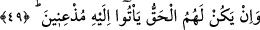
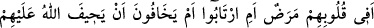
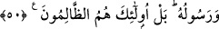
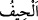
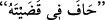

Bu âyette anlatılanlar, bir önceki âyette zikredilen yüz çevirmenin bir şerhi ve daha
açık olarak îzâhıdır.
49. Ama, eğer (Allah ve Rasûlü’nün hükmettiği) hak kendi lehlerine ise, ona
boyun eğip gelirler.
“Ama, eğer hak” yâni verilecek hüküm aleyhlerine değil de “kendi lehlerine ise”
Hz. Peygamber (s.a.)’in lehlerine hükmedeceğini kesin olarak bildikleri için “ona
boyun eğip” gönüllü olarak “gelirler.”
50. Kalblerinde bir hastalık mı var; yoksa şüphe içinde midirler, yahut Allah ve
Rasûlü’nün kendilerine zulüm ve haksızlık edeceğinden mi korkuyorlar? Hayır, asıl
zâlimler kendileridir!
“Kalblerinde bir hastalık mı var?” Buradaki soru, onların zikredilen yüz
çevirmelerinin doğru bir şey olmadığını, çirkin bir davranış olduğunu ifâde etmekte ve
yüz çevirmelerinin nereden kaynaklandığını ortaya koymaktadır. Yâni bu yüz çevirme,
küfür ve nifakları yüzünden kalplerinin hasta olması sebebiyle midir? “Yoksa” bütün
gerçekliği ile ortaya çıkmasına rağmen Hz. Peygamber (s.a.)’in nübüvveti konusunda
“şüphe içinde midirler, yahut Allah ve Rasûlü’nün” hüküm verirken “kendilerine
zulüm ve haksızlık edeceğinden mi korkuyorlar?” “
” zulüm, haksızlık ve hüküm
verirken iki taraftan birine meyletmek demektir. Bir kimse hüküm verirken haksızlık
yaptığı zaman
denir.
Sonra Allah Teâlâ, onların Allah ve Rasûlü’nün hükmünden yüz çevirmelerine sebep
olabilecek bu ihtimallerin hepsini bir tarafa bırakıp “Hayır, asıl zâlimler
kendileridir!” buyurarak bunun menşeinin bizzat kendi kötülükleri olduğuna hükmetti.
Yâni bu yüz çeviriş, zikredilen şeylerin hiçbirinden dolayı değildir.
İlk ikisine gelince, eğer bunlardan biri sebebiyle olsaydı, haklı olduklarında bile Hz.
Peygamber (a.s.)’dan yüz çevirirler, nifak ve şüphe içinde bulundukları için hükmüne
boyun eğerek O’na gelmezlerdi. Üçüncüsüne gelince böyle bir şeyin olması kesinlikle
mümkün değildir. Çünkü onlar Hz. Peygamber (s.a.)’in güvenirliğini ve hakta sebâtını
bildikleri için haksızlık ve zulme uğramaktan asla korkmuyorlardı. Bilakis onlar,
üzerlerinde hakları bulunanlara, bu hakları bile bile inkâr ederek zulmetmek isteyen